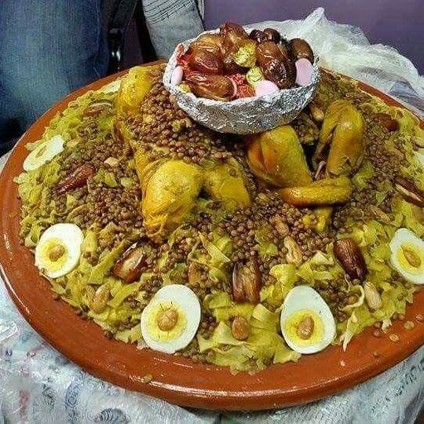

rfissa with kitchen sauce
There may be nothing elegant about pouring hot meat and broth over a plateful of bread,
yet around the world such humble fare is regarded as savory, satisfying comfort food at its best. You'll find chicken and chickpeas, lamb and vegetables,
and a number of soups served this way in Iraq, the United Arab Emerites, and Italy, respectively
Ingredients:
- 1 chicken, quartered, or left whole
- 2 to 3 large onions, thinly sliced
- 1/3 cup olive oil
- 2 teaspoons salt
- 2 teaspoons freshly ground black pepper
- 1 tablespoon groundginger
- 2 teaspoons ras el hanout
- 1 teaspoon turmeric
- 1 teaspoon saffron threads, heated gently and crumbled
- 1/2 cup lentils, uncooked
- 2 tablespoons fenugreek seeds, soaked overnight and drained
- 1 teaspoon saffron threads, heated gently and crumbled
- 1 small bunch cilantro, finely chopped
- 1 small bunch parsley, finely chopped
- 3 cups water
- 1 teaspoon smen, Moroccan preserved butter
Steps:
- first step >>>
-
To reduce their pungency and soften them, soak the fenugreek seeds in water for at
least several hours or overnight if possible. When ready to use, drain. Although they are normally stewed directly in the broth, you may want to tie the soaked lentils in cheesecloth,
which allows you to offer them on the side in the event someone at the table doesn't care for them.
-
second step >>>
- Arrange the msemen on a large serving dish. Add the chicken to the bed of msemen, and distribute most of the broth, onions,
and lentils over the chicken and msemen. Reserve a bowlful or two of broth to offer on the side.
- thirth step >>>
- If you tied the fenugreek in cheesecloth,
you can also offer the fenugreek in a bowl on the side.
- forth step >>>
- Moroccan tradition is to gather around this single large dish,
with each person eating from his own side of the plate by hand or with a spoon.
Return to top
return to home